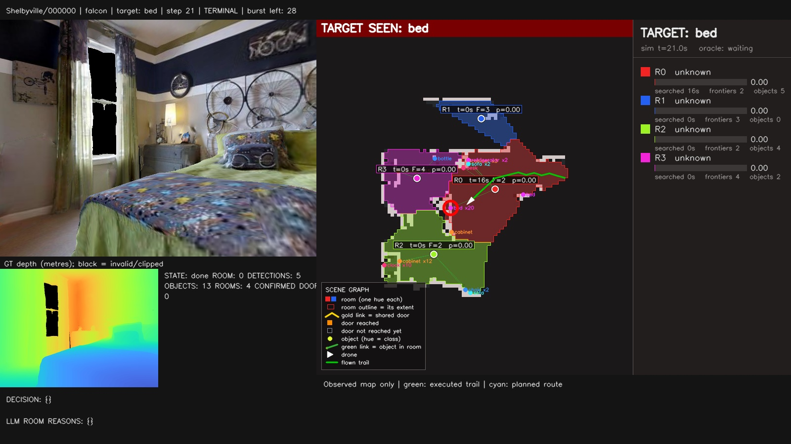
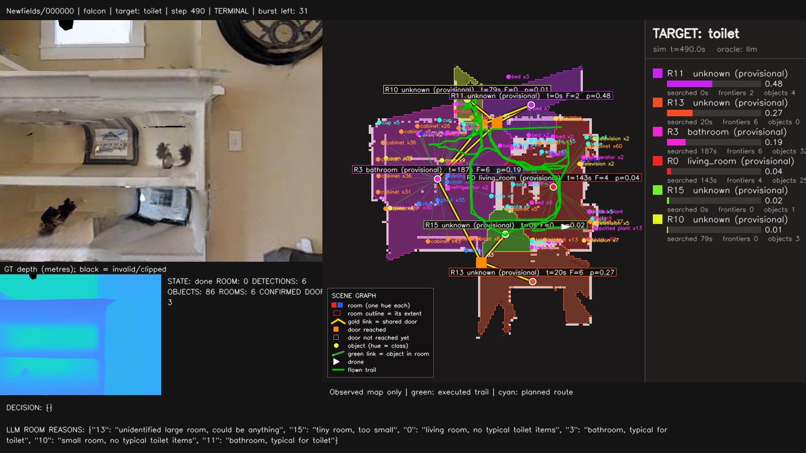

Who decides, and when?
Two actual state machines, three distinct clocks, one-room behavior, target interrupts, and step-by-step evidence from saved runs.
The frontier execution loop
The ObjectSearchSupervisor chooses and budgets rooms. It does not generate paths or physically search them. The benchmark caller supplies frontier goals and A* routes. Other generic mission supervisors and ROS planners are not additional stages of this execution path.
| State | Decision owner and work | Exit |
|---|---|---|
| SELECT | Filter room options, build a cost instance, reuse/replace the committed RPT order and commit an eligible room. | To TRANSIT; with no room candidate the caller may still select a global observed frontier. |
| TRANSIT | Supervisor retains destination; A* plans or reuses its route. Mapping/detection continue. | Goal proximity starts SEARCH, or route/blockage/time limits release the room. |
| SEARCH | Supervisor budgets the visit. The local selector chooses large frontier clusters inside its inferred room; A* provides routes. | Observed frontiers clear, budget expires or frontier count stalls; release and return to SELECT. |
| Target handling | Policy evidence interrupts above the supervisor. A* approaches the target; bounded turns gather support. | Fresh support plus proximity gives STOP; rejection/loss returns to room work. |
The generic supervisor has a terminal FOUND state, but this benchmark does not feed it a GT target-seen latch. Actual target STOP is decided by the policy’s detector/evidence path.
RPT call conditions
RPT is consulted in SELECT only, after filtering, when there is no remaining eligible head in the stored order or the eligible room-ID set changed. A new LLM probability does not itself cause a solve. Transit/search keep their chosen room. Releasing a room advances the order cursor; a later selection may reuse its suffix.
Eligibility requires a goal coordinate, relative room weight ≥0.01 and no active deferral. A visited room normally cools for 120 action-clock seconds; if every survivor is cooling, that cooldown is waived. Three unproductive attempts defer a room for 180 action-clock seconds. Mapped, budget-spent and stalled visits are considered productive bookkeeping outcomes, not proof that the target is absent.
Within-room frontier selection
- Find free cells four-adjacent to unknown; cluster adjacent frontier cells and ignore clusters smaller than four cells.
- Use the chosen room mask in SEARCH; outside that state the caller may use a whole-map mask.
- Rank largest cluster first, not nearest-first and not by a fresh LLM score for each frontier.
- Use a cluster-mean representative, snapped to passable space if necessary.
- Ignore goals within the 0.35 m completion neighborhood and goals within 0.4 m of the latest 100 visited/rejected points.
- Retain a viable current goal until arrival/invalidation. Do not replace it every observation.
A room-constrained destination does not guarantee a room-constrained path: A* searches the full observed map. Snapping a new representative is also not itself a proof of room membership. On a room-release tick the caller clears its route and can select a global frontier before the next SELECT.
| Supervisor test | Default threshold | What it means |
|---|---|---|
| Arrival | Goal distance <0.6 m | Starts search; not a debounced room-mask entry check. |
| No successful new route | More than 5 action-clock seconds | Abandon as unreachable. |
| Blocked transit | More than 6 seconds | Abandon the committed transit. |
| Transit timeout | More than 120 seconds | Release the room. |
| Mapped | After 8-second grace; zero frontiers for 3 supervisor updates | Observed frontier completion, not exhaustive object inspection. |
| Room budget | 90 seconds after arrival | May finish with unknown space remaining. |
| Frontier-count stall | No decrease for more than 30 seconds, after grace | A heuristic; new area can grow while count stays constant. |
These “seconds” are action-index-derived, not inference wall time. Target handling bypasses supervisor updates but the action clock continues; returning to the room can expose an already-expired budget. Three zero-count updates can also repeat the same graph fact, because graph geometry normally refreshes every ten steps.
A* and route commitment
The shared WeightedAStarPlanner2D penalizes obstacle proximity, favors corridor clearance, simplifies near-collinear path segments and resamples around 0.25 m spacing. It first tries inflation 0.30 m, then 0.25, 0.20, 0.18 m if necessary, never below the physical floor. Unknown is blocked; requested goals may snap within 0.30 m.
A committed route survives turns and unrelated map changes. Replan when command kind/goal changes, goal shifts over 0.5 m, cross-track exceeds 0.5 m, remaining path becomes obstructed, forward movement is blocked, or progress stalls over 30 steps. Progress must improve by 0.10 m; replacing a path is not movement. Positional stagnation persists through safety-triggered replans.
It remains accepted for configuration compatibility. Current safe paths are not replaced every five actions. RPT ordering and A* route replanning have separate event conditions.
Sources: C24: supervisor; C02: caller; C16: frontier goals; C15: A*/commitment.
Bounded FALCON, step by step
This is a ROS-free 2D/2.5D adaptation of coverage-guided exploration, not the original aerial binary and not a renamed default frontier heuristic.
- EXPLORE →Local CP/SOP viewpoints.
- REASON →Refresh semantic room evidence.
- SELECT →RPT chooses a region.
- TRANSIT →A* follows a committed route.
- EXPLORENew burst after entry.
VERIFY and RECOVER can interrupt. DONE terminates. Up to five zero-motion phase transitions occur inside one policy call, so REASON → SELECT → TRANSIT need not cost idle simulator actions. A transition-guard failure is terminal rather than an infinite loop.
Startup and scope
Begin local exploration without requiring a room label or opening panorama. Anchor a 4 m radius envelope at the observed start. If a room exists there, intersect its mask; otherwise use a provisional region. Later geometry can refine it, but the envelope does not follow the robot indefinitely or chase doorway jitter.
Other observed rooms are excluded from the local scope; a bounded unknown apron supplies guidance only. Split regions inherit overlapping visit history; merged regions inherit multiple overlaps. The budget belongs to a burst token, not a room ID, so relabeling cannot refill it.
Inside one local planning transaction
- Maintain frontiers. Update free/unknown boundaries from changed observations; split long clusters along their principal geometric direction.
- Find physical reachability. Use observed free space, body-radius clearance and local scope. Executable paths do not cut obstacle corners diagonally.
- Sample viewpoints. Ring radii are 0.4, 0.8 and 1.2 m, with 16 angular samples. Check reachable position, frontier visibility and unknown-space gain using camera field of view, depth range, pitch and occlusion—not omnidirectional sensing.
- Keep alternatives. Up to four viewpoints per frontier; quantize yaw to the action lattice; remember visited/rejected position-heading pairs. An already-observed zero-motion orientation is not new information.
- Decompose geometry. Use 4 m coarse tiles and separate safe-free/unknown connected zones. Rectify representatives into components; build connectivity/portal edges and exclude isolated unknown zones.
- Plan coverage (CP). Solve an open asymmetric ordering over active-free viewpoint zones and relevant unknown-zone centers. The first destination must be active free. Unknown paths have penalty 2 and are hypothetical guidance, never execution permission.
- Apply sequential ordering (SOP). Preserve precedence of remaining coverage elements while inserting frontiers from the current/next selected zones. Only the viewpoint prefix before the next guidance element is immediately useful; later work is deferred, not marked searched.
- Refine viewpoint choices jointly. A layered shortest-path optimization chooses compatible alternatives across the prefix and includes a terminal guidance cost where available.
- Build executable routes. Produce actual free-space paths and viewing yaw. Commit the first viewpoint and replan after completion/invalidation, not blindly through an entire hypothetical unknown-space tour.
Ordering uses exact subset dynamic programming up to 10 nodes, then deterministic beam search of width 128. It is not upstream LKH; beam results are not exact. Motion cost approximates serial forward actions and path yaw changes rather than simultaneous aerial translation/rotation.
A transaction has a 1.5 s cooperative deadline, an 18-frontier sampling cap, 18,000 grid-node cap and 64 order-node cap. Native numerical work is bounded and checked before/after, not forcibly preempted at exactly 1.500 s. Failure/capacity/deadline outcomes are recorded; no hidden switch to the frontier baseline occurs.
Budgets and exits
| Quantity | Default | Meaning |
|---|---|---|
| Local burst | 48 actions | Includes turns, failed movement, verification and recovery while active. |
| Target interrupt | 24 actions | Bounded reaction to a candidate; never refills the old burst. |
| Transit | 90 actions from selection | Separate from local allowance; all inside global 500. |
| Recovery | 3 actions per attempt | Charged turns, not reverse/teleport/free views. |
| Failed local goals | 4 | Ends a burst for unrecoverable blockage. |
| Low gain | 14 exploration decisions below 0.05 m² new area | Heuristic local ending, not target-free proof. |
| Revisit | 16-action cooldown; at most 3 overlapping-region bursts | Useful action-budget-expired regions have a special reconsideration path. |
| Entry | 2 distinct indices inside the region | Also requires path arrival or proximity to its reachable interior goal. |
A burst can end before 48 for frontier exhaustion, no useful reachable view, gain stagnation, planning limits, repeated blockage, floor change or confirmed target. Budget expiry is partial completion, not a negative target label. If expiry happens during verification, remaining bounded target work consumes global/target allowance, not a refilled burst.
Boundary reasoning and selection
Record the ending region/outcome/gain; suspend an unfinished compatible route after action-budget expiry. Refresh geometry with model queries disabled, then explicitly run enabled room classification and one affinity round. Build reachable region goals respecting overlap visit counts and cooldown.
If a nonempty eligible goal set survives, invoke RPT once for that SELECT and execute only its first returned room. The full order is logged, but this orchestrator does not retain the suffix as the default supervisor does. At the next burst boundary it reasons and selects again. Scores changing during transit do not continuously retarget it.
Transit uses shared A*/route memory. After debounced inside-room entry and arrival, begin a new burst, optionally restoring a compatible safe saved route. No eligible region, unavailable route, transit timeout or repeated nonlocal blockage can instead produce early DONE/STOP. That is a limitation of search scheduling, not evidence of complete exploration.
Sources: C03; C25: ledger/defaults; C26: CP/SOP planner; C27: regions/routes; C29: adaptation correspondence.
Detection, approach, verification and STOP
Both variants use the same target evidence/approach mechanism. A depth-backed accepted target hypothesis can guide approach before it is fully confirmed. A* handles approach; RPT does not. The standoff accounts for the 0.75 m proximity gate, 0.25 m endpoint tolerance, map resolution and goal snapping; under defaults its lower bound is the 0.18 m physical radius.
- Maintain support per associated landmark, once per frame.
- Require at least three observations and at least one view separated from first support by 0.20 m translation or 20° yaw.
- A gap above eight steps resets support; a selected candidate more than eight steps unseen is forgotten.
- Near target/approach endpoint, request at most two verification turns for that hypothesis.
- Reject unsupported/stalled candidates, clear their support, and suppress them for 20 steps.
- On fresh support and target distance ≤0.75 m, emit STOP. The evaluator independently judges the final position.
The three frames need not all be independently separated. Correlated false predictions can therefore satisfy the gate. “Confirmed landmark” after two ordinary observations, “confirmed target” after stricter support, and GT success are distinct.
FALCON saves the interrupted route and remaining burst token, allocates at most 24 target actions, and resumes after rejection/loss. Route-only watchdog clocks exclude the explicit pause; actual global and active-burst budgets do not. Recovery during verification remains inside the same target allowance. The default does not have this same burst/route-bank orchestration.
Sources: C28: evidence; C02: perception/approach:200–242; C03: interrupts:109–137.
What happens if there is only one room?
One inferred room can be a real open-plan room, the only observed part of a bigger house, or under-segmentation. The algorithm is not told the GT room count.
| Situation | Frontier | FALCON |
|---|---|---|
| No rooms | No room oracle/solver candidates. Try global observed frontiers; otherwise hold becomes idle left turn. | Start provisional local exploration. A small charged recovery may help. A later no-eligible-region SELECT can terminate. |
| One visible room | SELECT can still call RPT on the singleton. Ordering has no alternative; it may transit toward that room’s centroid even from within it. | Start local exploration without RPT. If a target is found first, the entire episode can have zero room-LLM/RPT calls. A later eligible SELECT can still call the singleton solver. |
| One useful budget-expired region | Uses its own 90-second room clock, not a 48-action burst. | Can reconsider it despite immediate cooldown, subject to overlap history and the three-burst cap. |
| One region ends for low gain/blockage | All-cooling escape can select it again, causing repeated visits. | The special partial revisit does not apply. With no other eligible region, it can stop with much of the global budget unused. |
| New region appears mid-motion | Current room remains committed until its state ends; changed eligibility matters at a later SELECT. | Active token/envelope persist; reasoning happens at a boundary, not each segmentation change. |
Does singleton probability 1 crash RPT?
The relative singleton weight is 1, but the instance multiplies it by mapped-presence mass and clamps below certainty. The adapter does not pass the candidate’s naive renormalized 1 into the heuristic. For a travel-only singleton, the only order is that room; probability cannot change the destination.
One room does not imply the target is there, all of it was searched, its semantic label is known, every object was visible, or a stopped search proves absence. A 4 m anchored scope can cover only part of a large room. The important improvement is not skipping a cheap singleton solve; it is deciding when to expand, revisit, recover or terminate without confusing temporary ineligibility with impossibility.
Sources: C12, C17, C24, C27: room_goals:78–117.
How often is each component called?
Action clock: emitted actions against 500. Policy proxy: action index ×1.0 s for inherited effort/room timers. Wall clock: real mapping/inference/planning time. Video playback at six decisions/second is none of these. This is not an established fixed-10-Hz navigation loop.
| Component | Frontier default | Bounded FALCON |
|---|---|---|
| Observation | At reset and after each action; N actions yield N+1 observations. No next action after the terminal observation. | |
| Mapping / detector | Every policy decision, including transit, recovery and approach. | |
| Room geometry | Initially, after ≥10 steps since last refresh, or on a changed confirmed-door revision. Early refresh resets the interval. FALCON additionally refreshes at reasoning boundaries. | |
| Affinity LLM round | Each graph refresh with nonempty rooms, unless earlier target STOP returned. Normally 0,10,20… only without door-triggered early refresh. | REASON boundaries only. Periodic geometry updates disable queries. May be zero for a whole episode. |
| Room classification | Per room at query-enabled reasoning, after evidence gates, on changed counted signature or ≥50-step age. A round may include zero or many classification calls. | |
| RPT adapter | SELECT when order spent/ineligible or eligible room-ID set changes. | One call for SELECT with eligible region goals. Later reasoning re-selects; no suffix commitment. |
| Local goal planning | Replace frontier goal only when completed/invalid; largest-cluster rule. | Maintain frontier observations each step; CP/SOP/viewpoint transaction only when a new local plan is needed. |
| Common A* | Frontier, room transit and target approach if no reusable route. | Transit and target approach; local routes come from FALCON’s own builder. |
| Action conversion | Every decision. | Every decision, plus actual-forward safety veto. |
“LLM every ten steps” is incomplete. One frontier graph tick can make an all-room affinity request and several per-room classifications; retries add more. Door confirmation can bring it forward. The same FALCON geometry tick makes no model query. All calls are synchronous; waiting for a model gives no extra free views.
Recorded llm_queries counts accepted graph-affinity rounds, not total requests. room_label_queries is separate. Inspect repairs, solver records and local-planning records too. Floor resets recreate graph/classifier counters, so final graph counts need not be whole-episode totals in floor-reset episodes. The following examples have zero floor revisions.
| Episode / variant | Actions | Affinity rounds | Room classifications | RPT records | Common A* calls |
|---|---|---|---|---|---|
| Shelbyville / frontier | 21 | 2 | 0 | 1 | 3 |
| Shelbyville / FALCON | 21 | 0 | 0 | 0 | 2 |
| Newfields / frontier | 417 | 48 | 40 | 7 | 41 |
| Newfields / FALCON | 490 | 10 | 25 | 9 | 10 |
| Mifflinburg / FALCON | 21 | 1 | 1 | 0 | 0 |
Newfields frontier’s 48 affinity rounds exceed a simple every-ten count because door events can refresh early. FALCON’s last Newfields SELECT has no eligible room, so ten reasoning rounds produce only nine RPT calls. Common A* counts exclude local FALCON CP/SOP/free-route transactions.
Walk through complete recorded behavior
Shelbyville: bed, all 21 actions
Both variants succeed in 21 actions with SPL 1.0. The FALCON episode starts with one observed region, turns to a local viewpoint, detects a bed candidate and never reaches room reasoning. Zero room-LLM and RPT calls are therefore legitimate behavior—not proof of a broken integration or proof of useful multi-room reasoning.
Decision indices are zero-based. Index 20 emits the twenty-first action, STOP; observation 21 is terminal. Mapping/detection run on each decision.
| Decision indices | Exact emitted action sequence | Decision explanation |
|---|---|---|
| 0 | TURN_LEFT | Local FALCON viewpoint requests a 30° facing change, not a mandatory panorama. |
| 1–2 | FORWARD, FORWARD | Bed candidate interrupts; A* adopts/revises the approach route as the hypothesis changes. |
| 3–6 | LEFT, FORWARD, RIGHT, FORWARD | Converter follows the committed target route on a quantized heading lattice. |
| 7–10 | LEFT, FORWARD, RIGHT, FORWARD | Same interrupt/route; no new room or RPT decision. |
| 11–14 | LEFT, FORWARD, FORWARD, FORWARD | Continued approach and fresh visual support. |
| 15–19 | LEFT, FORWARD, FORWARD, FORWARD, FORWARD | Final approach using predicted target geometry, not GT distance. |
| 20 | STOP | Fresh support and proximity pass the policy gate; evaluator judges afterward. |
FORWARD/LEFT/RIGHT abbreviate the legal action names. The burst records 20 actions before target completion; STOP is charged globally in DONE. The target interrupt begins at count 1 and ends before its 24-action allowance. Two common A* calls were used.

Newfields: all ten FALCON bursts
Target toilet. Frontier succeeds after 417 actions; FALCON stops unsuccessfully after 490, final DTG ≈3.388 m. Counts below are emitted-action counts, not wall seconds; gaps between bursts include transit and associated interruptions.
| Burst | Start count | Local actions | Boundary count / reason | Next selection |
|---|---|---|---|---|
| 0 | 0 | 26 | 26 / unrecoverable blockage | Room 0; next burst 39. |
| 1 | 39 | 27 | 66 / unrecoverable blockage | Room 3; next 86. |
| 2 | 86 | 48 | 134 / action budget | Room 0; next 165. |
| 3 | 165 | 15 | 180 / negligible gain | Room 5; next 252. |
| 4 | 252 | 37 | 289 / negligible gain | Room 3; next 303. |
| 5 | 303 | 17 | 320 / negligible gain | Room 10; next 330. |
| 6 | 330 | 13 | 343 / negligible gain | Room 7; next 422. |
| 7 | 422 | 4 | 426 / no useful reachable frontiers | Room 12; next 439. |
| 8 | 439 | 7 | 446 / no useful reachable frontiers | Room 13; next 472. |
| 9 | 472 | 17 | 489 / negligible gain | No eligible region; STOP is action 490. |
Every boundary refreshes reasoning. Nine numerical RPT solves all finish with an optimal guarantee for the supplied problems. They do not make the episode successful: target evidence, reachability, local scopes, costs and termination can fail even when ordering is exact.
Inside burst 2: recovery and target interruption
The burst begins at 86. Route/viewpoint invalidations at 94,100,108 cause charged three-action recovery turns. A target interrupts at 128, is rejected/lost at 130, and the same token resumes. At 134 the local ledger reaches 48 and ends; reasoning/RPT choose room 0, then transit lasts until the next burst at 165. The interrupt never refills the budget.
The low-gain test counts exploration decisions, whereas the budget counts emitted local actions. The final low-gain observation can end a burst before another local action is emitted; this explains why a 14-decision condition can accompany only 13 charged actions. Do not equate counters solely from their names.

Mifflinburg: early failure without an RPT call
Recovery occurs at counts 11,14,17. At 20 the first burst ends for blockage, makes one affinity round and one room classification, and finds no eligible region. STOP is action 21. There were no RPT or common A* calls; frontier succeeds from the same start after 173 actions. A short run is not necessarily efficient.
Ranchester: confirmed target, failed evaluator
FALCON stops after 45 actions with a fresh multi-view-confirmed-target reason, but fails at ≈0.175 m from the success-region boundary. Woodbine and Wainscott also have confirmed-target stops that fail. Logs alone cannot distinguish detector false positives, range/association errors and scorer/annotation mismatch. Do not present all three as proven recognition errors.
Measured evidence: E1: original episode rows, per-step actions and hierarchy transitions; C20: campaign report.